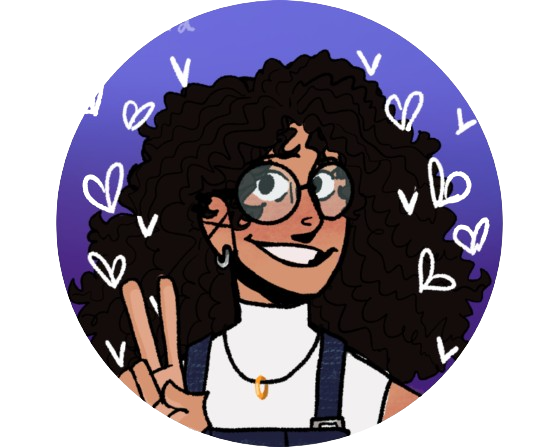

Larissa
Hi there, bem-vindo à minha página pessoal. Sou discente em IBM e uma artista ainda informação, que diariamente flerta com o front-end. Aqui será a casa de futuros projetos e porta de entrada para novos :)
Hi there, bem-vindo à minha página pessoal. Sou discente em IBM e uma artista ainda informação, que diariamente flerta com o front-end. Aqui será a casa de futuros projetos e porta de entrada para novos :)
Bacharelado em Informática Biomédica
UFPRA Informática Biomédica é uma área que combina tecnologia da informação com medicina, visando melhorar os cuidados de saúde. Os profissionais desenvolvem soluções tecnológicas para resolver problemas complexos em saúde, trabalhando com equipes multidisciplinares.
Ciclo formativo
Pretalab OlabiO PretaLab é um projeto brasileiro que tem como objetivo capacitar e incentivar mulheres negras a ingressarem e se destacarem no mercado de tecnologia.
Bacharelado em Artes Visuais
UNINTERO bacharelado em Artes Visuais é um curso superior que oferece uma formação ampla em técnicas de desenho, pintura, escultura, vídeo, instalação e performance, além de disciplinas teóricas como história da arte e filosofia. Ao final do curso, os graduados podem atuar em diversas áreas, como galerias de arte, museus, produção audiovisual, cenografia e design gráfico, além de seguir carreira como artistas plásticos.
- Desenvolvimento web
- Processamento de Imagens Médicas
- Ciência de dados
- Circuitos Digitais
- Bioinformática
- Inteligência artificial
- Análise de dados genômicos